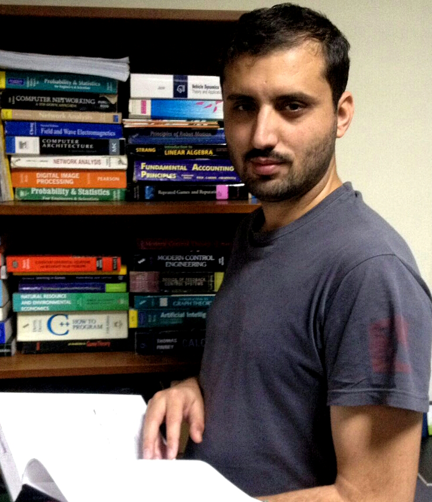

ibook-analytics
Real-time multi-tenant analytics platform.
Python
Data & AI engineering
Independent data and AI consultant building production-ready systems with full-stack observability, safety guardrails, and evaluation. I lead and scale data teams and ship forecasting, MLOps, and agentic AI products across Q-Commerce, mobility, and enterprise.

Today I focus on how large language models and agentic workflows change how we build and operate data and AI systems. I work with LangGraph-style orchestration, RAG, and evaluation loops (offline evals, RAGAS-style metrics, LangSmith tracing) so systems stay reliable in production—not just impressive in demos.
Recent work spans an AI agent–based RAG chatbot for internal policy search, EdTech assessment pipelines, and MLOps platforms with feature stores, drift detection, and CI/CD for training and deployment. I care about pairing AI-assisted coding with rigorous engineering: observability, guardrails, and clear success criteria.
Selected roles across leadership, delivery, and applied research.
GCP · LangGraph · LLMs · Postgres · FastAPI · Kafka · Flink · MLflow · BentoML · Airflow · Python
AWS (Redshift, SageMaker) · Airflow · Airbyte · Metabase · Vector DBs · PyTorch · Python
GCP (BigQuery, Cloud Functions, Cloud Run) · Airflow · Python · SQL · Looker
AWS (S3, SageMaker, Redshift, QuickSight) · dbt · Kafka · Flink · Argo · TensorFlow · Python
AWS (S3, Lambda, Redshift, IoT) · Kafka · TensorFlow · Python
Recent public repositories on GitHub.
Real-time multi-tenant analytics platform.
Python
AI Ops system deployable locally or in production, with a simulation module for scenario testing.
Python · Docker
Agentic RAG for e-commerce customer support: FastAPI backend, workflow-style agent runtime, pgvector/Redis, Streamlit UI, observability with Prometheus, Grafana, LangSmith, and RAGAS.
Python
Introduction to Machine Learning — course materials hosted on this site.
Selected articles on Medium — MLOps series and earlier work from Motive (KeepTruckin).
Doctoral research in robotics and computer vision at LUMS (not completed), including visiting research at RPTU Kaiserslautern-Landau, Germany. Thesis topic: safe roadmaps and traversability analysis using 3D sensors for autonomous vehicles. Member of the Cyber Physical Networks (CYPHYNETS) research group supervised by Dr. Abubakr Muhammad.
That work connects graph-theoretic road analysis with vehicle models to assess whether roads are traversable for a given vehicle in the presence of obstacles and how safety compares to nominal conditions.
PythonSQLETL/ELTBatch & streamingOrchestrationData modelingGovernanceObservability
GCP (BigQuery, Cloud Run, Vertex AI)AWS (S3, Redshift, SageMaker, Lambda)
MLflowBentoMLAirflowdbtKafkaFlinkFeature storeModel registry
Statistical modelingCausal inferenceMLDeep learningPyTorchAI agentsRAG
Languages: English (fluent), Urdu (native), Pashto (native).